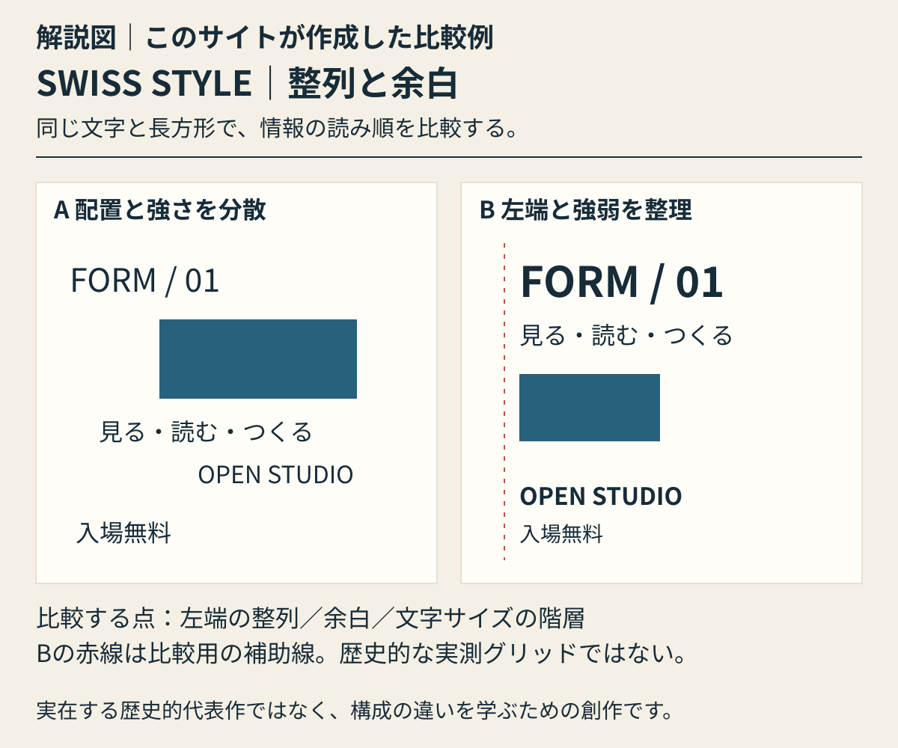

本文公開・自作解説図1点 / 実作品画像は未掲載 · 2026-10-30
グラフィックデザインの様式・方法
スイス・スタイル／国際タイポグラフィ様式 Swiss / International Typographic Style
年代 主な展開 1950–1970頃（教育・作品の前史と継続は別）
地域 スイスを中心に国際的展開 どの文字から、目に入る？ ポスターには、伝えたいことがいくつもあります。
文字を大きくしたり、太くしたりすると、目に入る順番が変わります。
写真や文字をどこに置くか、どれくらい空きを残すかも大切です。
スイス・スタイルでは、こうした工夫で、伝えたいことを読み取りやすくしました。
ポスターを見るなら、最初に目に入る文字は、ほかの文字と何が違うでしょう。 写真のあるポスターと、文字だけのポスターでは、目の動きがどう変わるでしょう。 ORIGINAL EXPLAINER · 自作解説図
スイス・スタイル：整列と余白 同じ見出し、案内文、青い長方形の二案。Aは分散した配置、Bは左端の整列と文字サイズの階層で読み順を整理。赤線は比較用の補助線。
実在する代表作の画像ではありません。見るポイントを学ぶために、このサイトが作った例です。

解説図｜このサイトが作成した比較例。同じ見出し、案内文、青い長方形の二案。Aは分散した配置、Bは左端の整列と文字サイズの階層で読み順を整理。赤線は比較用の補助線。 実在する歴史的代表作の画像・復元ではなく、特定作家の模倣でもありません。様式全体の定義や優劣を示す図ではありません。
考え方を確かめる美術館の資料 ↗ · 参照先がこの図を制作・監修したわけではありません。
解説図を大きく開く ↗ 02 — REPRESENTATIVE WORKS この動きを知るために選んだ作品
作品から、もっと知る。 作品の知名度や画像の入手しやすさだけで選びません。紹介したい作品と、調べて分かったことをまとめました。画像を載せられるかどうかは、別に確かめています。画像の利用許諾を確認できていないものは掲載していません。
01 白い円と文字を使った音楽ポスター 原題：Beethoven
白い円と、公演を知らせる文字。 音楽の公演を知らせるポスターです。
美術館の説明では、黒い地に白い円が重なり、中心に公演の情報があります。
円の間隔と文字の場所を、一緒に考える例です。
作品の所蔵元・解説ページで見る ↗ 原作品：個別記録はUsage conditions apply。作品の商用掲載許諾は未取得。 / 複製：複製画像の商用掲載条件は未確認。画像は未取得・未採用。
作品の記録と、詳しい説明 音楽ポスター
Josef Müller-Brockmann（デザイン）／Lithographie & Cartonnage A.G., Zürich（印刷） / 1955（Cooper Hewitt所蔵記録）
館の解説によると、黒い地に、中心が同じ白い円が重なっています。中心に近づくにつれて変わる円の間隔と、中心部分の公演情報が結びついています。図形のリズムと情報の置き方を見る代表例です。ここでの説明は館の文章に基づき、画像を実際に確認した結果ではありません。
対象はCooper Hewitt 2019-22-6です。1955年の紙に刷られたリトグラフで、127.6 × 91 cm、Merrill C. Bermanから寄贈されました。2019-22-6は所蔵番号で、制作年ではありません。Museum für Gestaltungの2019年の再版は、Uldryが印刷したシルクスクリーンです。その寸法、技法、印刷所を、この1955年の作品に当てはめません。作曲家ベートーヴェン（Beethoven）が亡くなった年は、ポスター画像の利用許可とは関係ありません。
02 ダンサーの写真を使ったポスター 原題：Giselle, Basler Freilichtspiele
ダンサーの写真と、文字を並べる。 ダンサーの写真を使ったポスターです。
写真と文字を、どう組み合わせるかが見どころです。
きちんと同じ間隔にそろえるだけではない、見せ方を考えられます。
作品の所蔵元・解説ページで見る ↗ 原作品：未確認 / 複製：ポスター画像・原写真の個別商用許諾は未確認。展示風景写真のクレジットを転用しない。
作品の記録と、詳しい説明 舞踊ポスター
Armin Hofmann / 1959
Poster Houseは、文字とダンサーの写真の関係を説明しています。グリッド（位置をそろえるための補助線）を厳しく守ることだけが、スイス・スタイルではないとわかる例です。
対象はMoMA 380.1963です。フォトリトグラフで、大きさは127.6 × 90.1 cmです。印刷所はWassermann A.G., Baselです。印刷所をダンサーの写真を撮った人とは扱いません。撮影者はまだ確認できていません。Mali Olatunjiが撮った1981年の展示会場の写真も、ポスターに使った元の写真とは別の権利があります。実画像の取得や、細部を実際に見る作業はまだ終わっていません。
03 文字の重なりで動きを見せるポスター 原題：Der Film
写真がなくても、文字で動きを見せる。 文字を重ねて画面をつくったポスターです。
美術館は、その重なりから生まれる動きを説明しています。
ダンサーの写真を使うポスターと、比べるための作品です。
作品の所蔵元・解説ページで見る ↗ 原作品：未確認 / 複製：個別所蔵ページは複製画像のライセンス窓口を案内。未許諾。
作品の記録と、詳しい説明 展覧会ポスター
Josef Müller-Brockmann / 1960
MoMAは、文字を重ねることで生まれる動きを説明しています。写真を使わず、文字だけで画面をつくる方法を、《Giselle》と比べられます。
対象はMoMA 57.1960です。オフセット・リトグラフで、Kunstgewerbe Museum Zürichから寄贈されました。現在の個別記録は90.1 × 127.6 cmですが、古い目録では順序が逆です。そのため、ここでは縦横の向きを断定しません。2019年に公式販売された再版は、Uldryのシルクスクリーンです。その技法、年、印刷者を、もとの所蔵作品に当てはめません。
04 デザインを伝える雑誌の創刊号の表紙 原題：Neue Grafik 1（創刊号の表紙）
雑誌の表紙で、考えを伝える。 デザインを伝える雑誌の、最初の号の表紙です。
文字をそろえて並べることが、何を読みやすくするかを考えます。
表紙の短い文字と、中の長い文章では、読み方も違います。
作品の所蔵元・解説ページで見る ↗ 原作品：作品の商用掲載許諾は未確認 / 複製：展覧会資料©2014 ZHdK。写真の一般クレジットはUmberto Romito、個別表紙図版の権利は要確認。
作品の記録と、詳しい説明 雑誌表紙・活版印刷
Carlo Vivarelli（表紙デザイン） / 1958年
ポスターだけでなく、雑誌でもデザインの考えが共有されていたことを示します。整然と文字を組むと、何が伝わりやすくなるのでしょう。表紙と本文を分けて考える代表候補です。
ZHdKの展覧会資料では、表紙は28 × 24.8 cmで、活版印刷（かっぱんいんさつ。文字などの凸面にインクをつけて刷る方法）とされています。共同編集者4人が、そのまま表紙の共同デザイナーだったとは扱いません。資料は、同誌の長い文章の組み方に対するWeingartの批判も紹介しています。規則正しく並べれば必ず読みやすい、とはいえません。表紙画像はまだ取得・実見していません。
もう少し知る：時代や、つくり方の話 どんな時代に、何をつくった？ 何から読めばよいか、すぐにわかる。そのために文字、写真、余白、グリッド（位置をそろえるための見えない補助線）を組み合わせる考え方です。特定の書体だけで決まるものではありません。配置の決まりと、どの情報を先に伝えるかに注目します。
チューリヒとバーゼルでは、教え方やつくり方に違いがあります。ポスター専門美術館のPoster Houseは、ホフマン（Hofmann）のグリッドを、機械的に守る固定ルールではなく、柔軟に画面を組み立てる方法として説明しています。一つの書体を使うことや、すべてを同じ間隔できれいに並べることだけでは、この考え方を説明できません。
01 — LOOKING CLOSELY 識別は、個別作品との照合から。
以下は観察のための問いです。すべての作品に共通する固定ルールや、未取得画像の実見結果ではありません。
COLOR 色と、使った材料 使う色を絞り、色や明るさの差を大きくした例に注目します。白黒だけに限られるわけではありません。
TYPE 文字をどう見せる？ サンセリフ（文字の端に小さな飾りがない書体）や、左端をそろえる配置を見ます。文字の大きさや太さを変えると、読む順番や情報の重要さをどう伝えられるでしょう。
FORM どんな形で、どうつくる？ 円や四角などの図形と、写真のはっきりした組み合わせを見ます。飾りが少ないという理由だけで判断することはできません。
COMPOSITION どこに、どう置く？ きれいにそろえることだけが手がかりではありません。ホフマンの《Giselle》のように、写真と文字の関係を優先する例もあります。ミューラー＝ブロックマン（Müller-Brockmann）の《Der Film》では、文字の重なりにも注目して比べます。
COMPARE
似ているところ、違うところ。 ニュー・タイポグラフィ（New Typography）とはつながりがありますが、同じ名前でまとめることはできません。今のウェブサイトに見られる、要素を少なくしたデザインとも、生まれた背景は違います。
項目を横に並べる ↗ READ TODAY
現代の作品と比べる（直接の影響は別に確認） 本や雑誌の編集、案内表示、画面を操作する仕組みを考えるときに、基本となる手がかりです。何を先に見せ、何を次に読んでもらうかを考えられます。ただし、グリッドを使っているだけで、直接この考え方を受け継いだとは判断できません。
図録の掲載順で読む 47 / 89 項目。年代順や、影響の順序ではありません。
本文の中央を左へ払うと次、右へ払うと前の項目へ。画像の上や画面の端では切り替わりません。上のリンクでも移動できます。キーボードでは、リンクなどを選んでいないときに左右キーで移動できます。